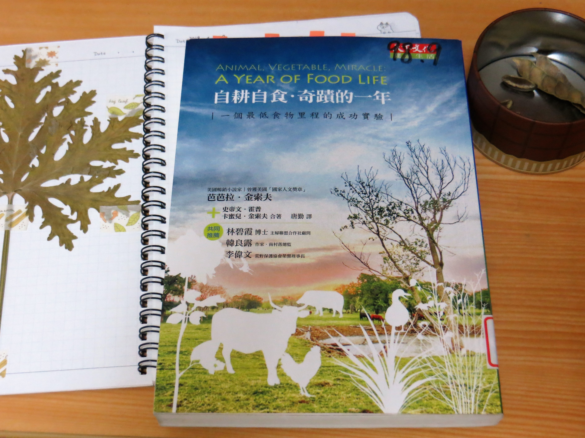

自耕自食 ● 奇蹟的一年
一個最低食物里程的成功實驗
看完這本長達400頁的長篇敘事小說，將會深深體會到「為什麼要堅持購買本地食物？為什麼要瞭解你吃下去的東西來自那裡？基因改造作物促使祖傳品種消失的危機？在很多資源如此豐富的國家，為什麼還會有人營養不良？吃對我們每一個人甚至整個產業發展的影響如此重要？」其中，書中點出了很多現代食品產業型態令人震驚的弊病。
為了達成低價大量出口，現代農業趨向單一作物大量生產，不但降低了農作物的物種多樣化，化學農藥和機器的使用更促使原本肥沃的土地逐漸沙漠化、連帶造成周遭的物種瀕臨滅絕。美國的基改玉米就是一個很典型的例子。
思考一下美國真的需要這麼多的玉米嗎？這些過剩的玉米將流向哪裡？大部分都製造成所謂的「玉米糖漿」、「果糖」，這種糖比蔗糖還要甜好幾倍只要加入一點點就夠甜了，因此替代了蔗糖被食品工業大量使用，加入飲料、餅乾、麵包等等食品。
而這些徒有碳水化合物和脂肪的食品漸漸成為主食，甚至在學校的營養午餐大受歡迎，更難過的是現代的孩子可能連蔬菜長在土裡的樣子都不知道的，要他們去嘗試吃蔬果更是困難，也難怪會有這麼多人營養不良甚至體重過重。
而這樣單一大量生產的產業型態，讓消費者寧願去購買超市中的便宜進口蔬果，也不願意多花點錢去附近市場購買本地生產的新鮮蔬果，因此讓很多小農放棄原本賴以維生的土地，另尋他業謀生。
這樣的惡性循環，更促成了如今的全球暖化。很難想像吧！舉隨處可見的紐西蘭奇異果為例，一顆在紐西蘭生長的奇異果，要進入這間超市要走多少的路程？要做上帶有冷凍設備的飛機，偏遠地區還要搭上貨車長途跋涉......。假使全世界的人都喜歡購買超市賣的好油廉價進口蔬果，各式各樣從不同地方來、到不同地方去......那麼大量的碳足跡怎麼也追究不完。
幸虧我的家鄉台東還保有著購買本地蔬果的習慣。早上五點多在鯉魚山就會有老農夫門的市集，各式各樣的當季當地的新鮮蔬果在這裡都可以輕鬆買到，而且通常都比超市便宜太多！三把大白菜五十元、芭樂五顆一百元，有時候熱情的阿嬤還會多送你一把菜或一根青蔥。有這麼好的在地早市有什麼理由不去看看呢？相信大部分有人居住的地方都有在地市集吧！購買他們的產品不但能擁有充滿著人情味的新鮮蔬果，還能支持小農們繼續努力耕種，長期下來的減少碳排放更是非常可觀的，不一定要自己耕種。
引用Wendell Berry（從事耕種的美國作家）的一句話：「吃離不開這個世界，吃東西不可避免是一種農業活動，而且在相當程度上，怎麼吃就決定了這個世界怎麼被使用。」為了自己的健康、為了小農們的收入、為了地球的永續生存，不妨嘗試一下這種友善的生活方式吧！
截取篇章 《想像一棵樹》
還不知道一年四季各出產什麼蔬菜水果嗎？首先想像一棵一年生的魔法樹，想長什麼就長什麼。當然也有二年生的植物，像是洋蔥和胡蘿蔔，在此不予考慮。
春天（４~５月）長出嫩葉：菠菜、甘藍、萵苣、甜菜葉，夏天（５~６月）長成比較成熟的結球葉菜和結球花菜：包心菜、羅馬萵苣、綠花椰菜、菜花，然後是剛結實的嫩果：荷蘭豆、嫩瓜、黃瓜（６月），再來是四季豆、青椒、小番茄（７月），然後是更成熟的、顏色更豐富的熟果：牛排蕃茄、茄子、紅甜椒、黃甜椒（７月末到８月），接下來是硬皮的大果實，裡面有成熟的種子：哈密瓜、蜜瓜、西瓜、南瓜、冬季瓜類（８月到９月），最後則是根菜類。
我們吃的每一種植物部位，都在一年中等著輪流上場，從葉子、花苞、花、綠實、熟果、硬果，所以等待是值得的，不一定要去吃其他季節的蔬果才會營養，光眼前的當季食物就吃不完了！按照一年四季的循環每一種五顏六色的營養都吃得到。